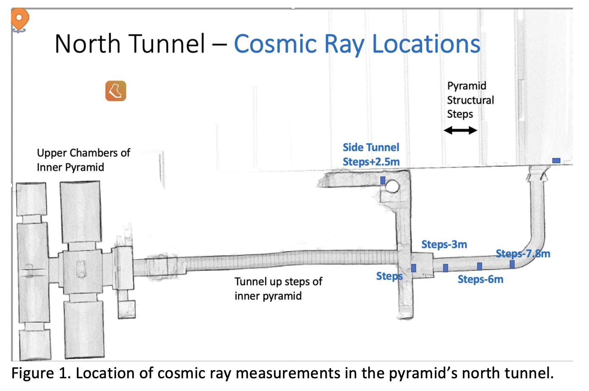

-
QuarkNet Interns building event displays and monitoring histogram.
-
Quad modules under construction at UVA - 4, scintillator strips mechanically packaged; photo detectors and some electronics installed.
-
Quads assembled into planes. Also, extruded strips cut to the correct size.
-
No turning back.
-
Boxes to hold detector plates designed.
Chichen Itza April 2023
• Electricity to the north tunnel installed.


-
Design and construction of a frame to hold the 3 detector planes inside the tunnel finished.
-
Able to rotate and fold up to allow archaeologists to pass through the detector, since it will fill up the tunnel.
-
Additional cosmic ray data collected using a few prototype channels of the final detector.
Chichen Itza August 2022


{kind=link}
{kind=link}
{kind=link}
{kind=link}
{kind=link}
{kind=link}
{kind=link}
•
Cosmic ray data collected using QuarkNet detectors inside and outside the pyramid.

•
Rates agreed with expectations based on the amount of material above the detector.
•
Crudely imaged the pyramid steps above us.
{kind=link}
{kind=link}
•
Laser mapped the inside of the pyramid tunnels and chambers.
•
Drone mapped the outside in order to have a complete model of the pyramid.
Chichen Itza March 2022
• Met archaeologists.
• Scinitillator extruded at Fermilab Lab 6; moved to CSU.
• Decided to use extruded triangular scintillator strips hence reducing the number of channels and allowing ourselves to build two detectors. Simplified some electronic boards from the readout designed by the Mu2e Collaboration at Fermilab. Joined efforts with Fermilab-UC-UVA group hoping to build a detector for use at Egyptian pyramids: designed electronics and mold for extrusions.
2020
• NSF approval.
• Additional simulation studies and cosmic ray background studies.
2019